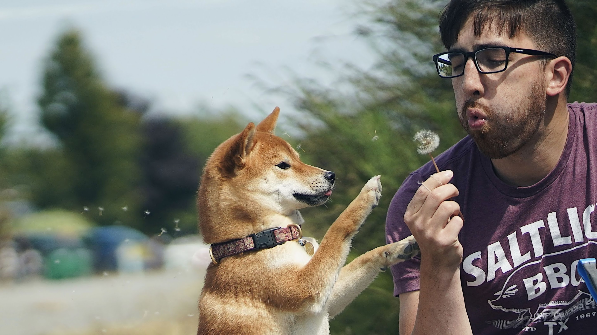
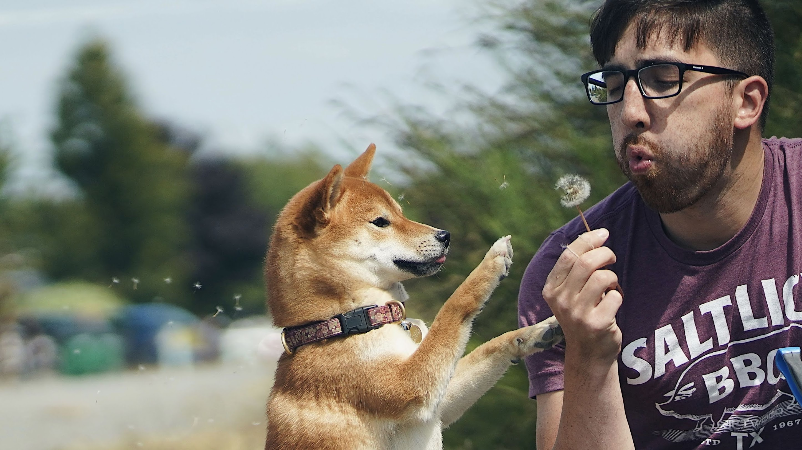

I post on my Instagram. I designed the 2020 “Year of the Rat” mascot for the Wing Luke Museum of the Asian Pacific American Experience. I also design stickers.


The Year of the Rat mascot, and Filipino dessert stickers
For a couple years I've been unreasonably into Hobonichi Techo Planners. I used to have three of them. (Three planners.) I have since learned from my past tragedies and have accepted that two planners is about my limit. (Two.)
I also like watercolor!

I shoot with a Sony Alpha a7IV. My current favorite lens is the 35mm f/1.4.
 
